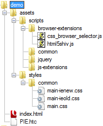

This is Part 2 in a series on creating a web application utilizing modern techniques in order to deliver a fast, cohesive site. The index for this series can be found at the end of part 1 in this series.
As you can see on the left, we are starting out with a fairly simple file structure. In order to keep things simple, we are going to assume that this is going to be run from the root of the website.
The first thing I'd like to do is point out the PIE.htc file in the root directory. This comes from the CSS3PIE project and will be used to aid IE6-8 in rendering CSS3 features such as rounded borders and background gradients. There isn't full support for every feature of CSS3, and there are a couple of quirks. However, this is still a far better use of resources to work around these minor IEOLD issues rather than having the additional images and markup needed to do rounded corners and background gradients via other, more traditional methods.
Second, I'd like to point out that I'm starting off with two JavaScript files in place. The css_browser_selector.js adds specific classes to the HTML (documentElement) element in order to write clean CSS rules when possible. This functionality is only useful when JavaScript is enabled, so it should be used sparingly. As IE is still the browser king, with several quirky variations on rendering, we'll also be adding in some conditional elements in order to target specific IE versions in our CSS.
At this point I am going to point out that I've defined three stylesheets. I've created a general main.css as well as the addition of a main-ienew.css and main-ieold.css. Where the ienew variant will be fore IE9+ and the ieold will target IE6-8 specifically. The main reason for this is because of some current quirkiness in IE9 beta where it will load PIE.htc behavior on elements despite being set not do to so.
example: #ieold .className { behavior: url(/PIE.htc); }
In the prior example, the #ieold should only apply to IE versions
prior to 9, however IE9 will still attempt to add the PIE behavior and break
the rendering. You can see an example of this here. It turns
out the bug wasn't with IE9's rounded corners with a background gradient, but
that it applies the behavior to elements it shouldn't be.
At this point, I'm going to point out the actual markup of our starting page, then go over the CSS that will be in place to support this. This is a demonstration of creating the rounded corners and background gradients only. Other operations will be covered in future articles.
!!! TODO: Insert HEAD Content Here !!!
Above you see the content through the HEAD section of the document.
We first start with the HTML5 DOCTYPE, which in essense tells the browser to
use whatever the newest/current rendering engine available has to offer.
Next we include some meta elements, the first of which X-UA-Compatible.
As of Internet Explorer version 8, the rendering engine for 7 and 8 are included,
unfortunately IE6 is not. I suggest using IE Tester, or a stand alone installer
for older IE version testing. The X-UA-Compatible meta attribute can set the
IE renderer to be used and is set to 99 in our example to future-proof things.
If you come across issues with IE9 or later, this can be helpful to force the
older rendering until specific issues can be worked out. You will also notice
the chrome=1 portion; which will tell IE browsers with the Chrome
Frame plugin installed to utilize the Chrome rendering engine where available.
I personally consider the Webkit rendering engine along with the V8 JavaScript
engine the gold standard to view against. This may change in the future, but
for now, how it renders in Webkit (Chrome/Safari) should be considered how it
*should* be rendering. This will give you the least resistance in adjusting
for non-compliant browsers.
After the typical meta elements for keywords, description and a link to the favicon. The regular TITLE element is encluded. It's worth noting that within the TITLE element, you should have your specific section of the site first, followed by more generic information. In this case, I'm starting with the specific page's name, followed by the title of the site/series. This can help will SEO, as having the same content in every title delutes the value of that title across a site.
The first scripts we include are those that *must* be included in the head in order to function properly, and before any stylesheets are loaded. This will reduce the impact of said scripts on the css that comes next. After the main.css, I am including some conditional scripts for IENEW and IEOLD, where IEOLD is anything prior to version 9 (our support target is 6-9), and IENEW is defined as anything from version 9 on (which supports HTML5). After the general stylesheets we're including a css to establish print adjustments. It's important to establish a print media stylesheet that reduces the additional clutter such as the header, footer and page margins in order for the printing experience to be better.
On to the rest of the html file...
!!! TODO: include body to close here
Within the BODY element, the first thing added is a number of DIV elements surrounded by IE's conditional comments. These comments allow for the CSS to target a specific version of IE, or even a non IE browser without the need for JavaScript (as added by the css_browser_selector.js), which can improve the initial rendering. It should be noted that we won't be avoiding javascript and progressive enhancement, but one should be mindful of the rendering of a page without JavaScript as this can help with visually impared users as well as the initial load impression of a given page/site.
Within the browser elements, we see some very semantic markup. An ARTICLE element is a container, which has an HGROUP (Header Group) element followed by a DETAILS element. The DETAILS element's first child is a SUMMARY element which contains the relative information regarding the rest of the DETAILS section. This can be thought of as similar to the relationship of a LEGEND element inside of a FIELDSET. Though the SUMMARY element is meant to be used as an inline element, we'll be displaying it as a block element. These tags may seem very blog oriented, and in a way they are. However, they do make for some very natural containers, as well as being far shorter than adding classnames to meaningless nested div tags. There is also a SECTION element that's been added which can be used to contain multiple ARTICLE tags for example. The use of these tags at a higher level allow for very simple CSS rules, and can minimize the risk of a conflict in structure for nested tags from external resources or controls down the road.
Finally we get into the .css files. I'll be stepping through the relevant portions, though you'll be able to download the full demonstration as well as view the demo page online.
TODO: h2 and grid_4
First, I reset the margin/border/padding for Heading elements. The next article
will have a more complete reset css attached, along with some @font-face declarations
to ensure a consistant rendering. Next is the .grid_4 declaration
which will be replaced with a generated grid 12 css in the next article as well.
TODO: hgroup
Here is where we start digging into the meat of this article. Within the HGROUP
we specify the various implementations of border-radius as this
attribute is only recently being formalized by the W3C, webkit (Chrome & Safari)
and Mozilla (Firefox) browsers created their own vender specific css attributes,
so we start with them. They all follow the same format allowing you to specify
each corner's value in a clockwise fashion starting with the TOP-LEFT position.
After the border-radius is defined, the background is then specified.
How this is done is to first specify a background color that will be used as a
fallback value. After this, we specify the vendor specific implementations and
finally fallback to a common CSS3 implementation.
You can find quite a bit of information on CSS gradients in this article. It's worth noting that the linked article has a few things that are at least mis-represented in regards to IE9, I'll discuss these in more detail when we reach part 5 in this series. For now I'll simply note that the -pie-background is required for the CSS3PIE implementation for IEOLD (6-8) and that the z-index for the grid_4 is also related to a quirk in using PIE.htc; I'll also be discussing the use of PIE further in part 5, which should be out next wednesday. For now, I am including the necessary markup for IEOLD and IENEW if you want to dig into the .css files for the demo.